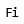

 Fillet Constant Radius
Component Index > ASTools > Surface > FCR
Creates a surfacefillet with constant radius
Inputs
| Name | ID | Description | Type |
|---|---|---|---|
| Surface A | A | Surface A to fillet. Need to intersect with surface B! | Surface |
| Surface B | B | Surface B to fillet. Need to intersect with surface A! | Surface |
| Radius | r | Radius of the fillet | Number |
| Side | i | At the intersecting curves, there are up to 4 possibilities to create a fillet (index 0-3) | Integer |
| Curvature Matching | bCM | Bezierfillets can be matched to curvature | Boolean |
| hasBezierArc | bBA | Prefering an bezierarcs over nurbsarc? Bezierarcs sligthly differ from a real circle, but they stay non-rational. \n This makes it easier to work with, when creating f.e. filletedges | Boolean |
| Order | o | if the order is between 3 and 12,the resulting shape will be simplyfied. Any other number keeps it exact. | Integer |
Outputs
| Name | ID | Description | Type |
|---|---|---|---|
| Fillets | F | Fillet | List of Surface |
Copyright © 2016 Robert McNeel & Associates.